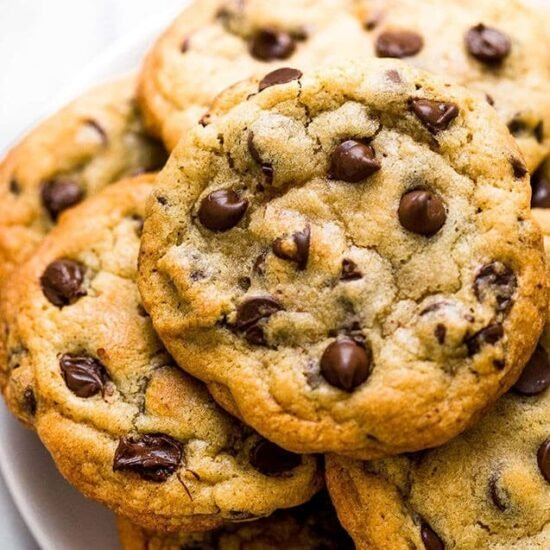

Chocolate Chip Cookies

Delicious Chocolate Chip Cookies
This quick and easy to make recipe will have your sugar cravings satisfied in no time! With just a 20 minute prep time and a 10 minute cook time, whipping up a quick batch is a no-brainer.
This recipe yields 4 dozen cookies, which is 24 servings total. This recipe includes walnuts, but feel free to exclude them for preference or if there are any nut allergies.
Needed Ingredients
- 1 cup butter, softened
- 1 cup white sugar
- 1 cup packed brown sugar
- 2 eggs
- 2 teaspoons vanilla extract
- 1 teaspoon baking soda
- 2 teaspoons hot water
- 1/2 teaspoon salt
- 3 cups all-purpose flour
- 2 cups semisweet chocolate chips
- 1 cup chopped walnuts
Directions
- Preheat oven to 350 degrees F (175 degrees C)
- Cream together the butter, white sugar, and brown sugar until smooth
- Beat in the eggs one at a time
- tir in the vanilla extract
- Dissolve baking soda in the hot water
- Add baking soda and salt to batter and stir
- Stir in flour, chocolate chips, and nuts
- Drop by large spoonfuls onto ungreased pans
- Bake for about 10 minutes in the preheated oven, or until edges are nicely browned